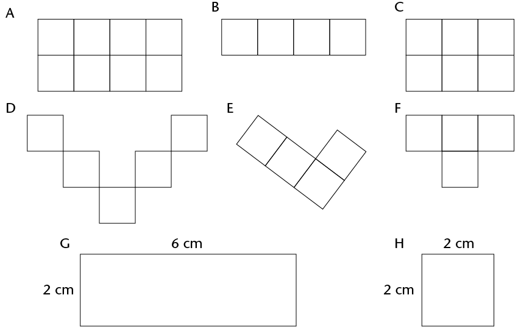
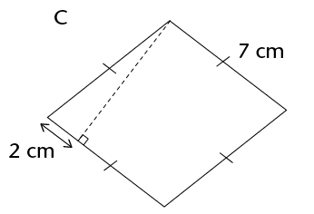

In this chapter, you will revise how to calculate the perimeter and area of squares,rectangles, triangles and circles. The perimeter of a shape is the distance all the wayaround the sides of the shape. The area of a shape is the flat space inside the shape. You will also learn how to calculate the areas of parallelograms, rhombi, kites andtrapeziums, as well as investigate the effect on the perimeter and area of a shape when its dimensions are doubled.
14.1 Area and perimeter of squares and rectangles 251
14.2 Area and perimeter of composite figures 253
14.3 Area and perimeter of circles 255
14.4 Converting between units 257
14.5 Area of other quadrilaterals 258
14.6 Doubling dimensions of a 2D shape 264

14 Area and perimeter of 2D shapes
14.1 Area and perimeter of squares and rectangles
revising concepts
1. Each block in figures A to F below measures 1 cm \times 1 cm. What is the perimeter and area of each of the figures? Complete the table below.
The perimeter (P) of a shape is the distance along the sides of the shape. The area (A) of a figure is the size of the flat surface enclosed by the figure.

|
Figure |
Perimeter |
Area |
Number of 1 cm \times 1 cm squares |
|
A |
12 cm |
8cm2 |
8 |
|
B |
10 cm |
4cm2 |
4 |
|
C |
10 cm |
6cm2 |
6 |
|
D |
20 cm |
5cm2 |
5 |
|
E |
10 cm |
4cm2 |
4 |
|
F |
10 cm |
4cm2 |
4 |
|
G |
16 cm |
12 cm2 |
12 |
|
H |
8 cm |
4cm2 |
4 |
2. Consider the rectangle below. It is formed by tessellating identical squares that are 1 cm by 1 cm each. The white part has squares that are hidden.
To tessellate means to cover a surface with identical shapes in such a way that there are no gaps or overlaps. Another word for tessellating is tiling.
(a) Write down, without counting, the total number of squares that form this rectangle, including those that are hidden.

Explain your reasoning.
(b) What is the area of the rectangle, including the white part?
Area of a rectangle = length \times breadth
= l \times b
Area of a square = l \times l
= l2
Both length (l) and breadth (b) are expressed in the same unit.
3. Sipho and Theunis each paint a wall to earn some money during the school holidays. Sipho paints a wall 4 m high and 10 m long. Theunis's wall is 5 m high and 8 m long. Who should be paid more? Explain.
4. What is the area of a square with a length of 12 mm?
= 2 mm \times 12
5. The area of a rectangle is 72 cm2 and its length is 8 cm. What is its breadth?
14.2 Area and perimeter of composite figures
breaking up figures and putting them back together again
1. The diagram on the left below shows the floor plan of a room.
(a) We can calculate the area of the room by dividing the floor into two rectangles, as shown in the diagram on the right below.

Area of the room = Area of yellow rectangle + Area of red rectangle
= (l \times b) + (l \times b)
= (14 \times 9) + (15 \times 8)
= 126 + 120
= 246 m2
(b) The yellow part of the room has a wooden floor and the red part is carpeted. What is the area of the wooden floor? What is the area of the carpet?
(c) Calculate the area of the room using two different shapes. Draw a sketch.

=246 m
2. Calculate the area of the figures below.

3. Which of the following rules can be used to calculate the perimeter (P) of a rectangle? Explain.
- Perimeter = 2 \times (l + b)
- Perimeter = l + b + l + b
- Perimeter = 2l + 2b
-
•
Perimeter = l +
b
land b refer to the length and the breadth of a rectangle.
The following are equivalent expressions for perimeter:
P = 2l + 2b and P = 2(l + b) and P = l + b + l + b
4. Check with two classmates that the 5. The perimeter of a rectangle is 28 cm rule or rules you have chosen above and its breadth is 6 cm. What is its correct; then apply it to calculate the length? perimeter of figure A. Think carefully!
14.3 Area and perimeter of circles
revising concepts from previous grades
The perimeter of a circle is called the circumferenceof a circle. You will remember the following aboutcircles from previous grades:
- • The distance across the circle through its centre is called the diameter (d) of the circle.
- • The distance from the centre of the circle to any point on the circumference is called the radius (r).
-
• The
circumference (c) of a circle divided by its
diameter is equal to the irrational value we call pi
(Ï€). To simplify calculations, we often use the
approximate values:π ≈ 3,14
or
.


The following are important formulae to remember:
circle calculations
In the following calculations, use π = 3,14 and round off your answers to two decimal places. If you take a square root, remember that length is always positive.
1. Calculate the perimeter and area of the following circles:
(a) A circle with a radius of 5 m (b) A circle with a diameter of 18 mm
P = 2Ï€r
P = 2Ï€r
2. Calculate the radius of a circle with:
(a) a circumference of 53 cm (b) a circumference of 206 mm
c = 2Ï€r
c = 2Ï€r
r≈ 8,44 cm
r ≈ 32,8 mm
3. Work out the area of the following shapes:


A = πr
A = 0,5Ï€
= 706,5 cm
4. Calculate the radius and diameter of a circle with:
(a) an area of 200 m2 (b) an area of 1 000 m2
A = πr
=200 \div 3,14
1 000 \div 3,14
318,47
r ≈ 7,98 m [length is always positive]
r ≈ 17,85 m
d = 2r ≈ 15,96 m
d = 2r ≈ 35,70 m
5. Calculate the area of the shaded part.
A = π

14.4 Converting between units
converting between units used for perimeter and area
Always make sure that you use the correct units in your calculations. Practise the conversions below.
Remember:
1 cm = 10 mm 1 mm = 0,1 cm
1 m = 100 cm 1 cm = 0,01 m
1 km = 1 000 m 1 m = 0,001 km
1. Convert the following:
(a) 34 cm =
mm (b) 501 m =
km
(c) 226 m =
cm (d) 0,58 km =
m
(e) 1,9 cm =
mm (f) 73 mm =
cm
(g) 924 mm =
m (h) 32,23 km =
m
Remember, to convert between square units, you can use method shown below:
To convert cm2 to m2:


Example
Convert 50 cm2 to m2
1 cm2 = 1 cm \times 1 cm 1 cm2 = 0,0001 m2
= 0,01 m \times 0,01 m ∴ 50 cm2 = 50 \times 0,0001 m2
= 0,0001 m2= 0,005 m2
2. Convert to cm2:
(a) 650 mm2 (b) 1 200 mm2
=650(0,1)(0,1) cm
=6,5 cm
(c) 18 m2 (d) 0,045 m2
=18(100)(100) cm
=180 000 cm
(e) 93 mm2 (f) 177 m2
=93(0,1)(0,1) cm
=0,93 cm
3. (a) Convert 93 mm2 to m2. (b) Convert 0,017 km2 to m2.
=93(0,001)(0,001) cm
=0,000093 m
14.5 Area of other quadrilaterals
parallelograms
As shown below, a parallelogram can be made into a rectangle if a right-angled triangle from one side is cut off and moved to its other side.

So we can find the area of a parallelogram using the formula for the area of a rectangle:
Area of rectangle = l \times b
= (base of parallelogram) \times (perpendicular height of parallelogram)
Area of parallelogram = Area of rectangle
∴ Area of parallelogram = base \times perp. height
We can use any side of the parallelogram as the base, but we must use the perpendicular height on the side we have chosen.
1. (a) Copy the parallelogram above into your exercise book.
(b) Using the shorter side as the base of the parallelogram, follow the steps above to derive the formula for the area of a parallelogram.
2. Work out the area of the following parallelograms using the formula.

3. Work out the area of the parallelograms. Use the Theorem of Pythagoras to calculate the unknown sides you need. Remember to use the pre-rounded value for height and then round the final answer to two decimal places where necessary.

heigh [Pythagoras]
heigh+ 9 = 25
heigh= 25 - 9
height= 16
your calculator)
height = 4
= 44 cm
≈ 54,22 cm


Area = base \times height
=12 \times 8
≈ 93,67 cm
rhombi
A rhombus is a parallelogram with all sides equal.
In the same way we derived the formula for the area of aparallelogram, we can show the following:
Area of a rhombus = length \times perp. height

1. Work in your exercise book. Show how to derive the formula for the area of a rhombus.
2. Calculate the areas of the following rhombi. Round off answers to two decimal places where necessary.


Area = length \times height
=10 \times 8
=80 m


heigh [Pythagoras]
height= 49 - 4
height ≈ 6,71
Area = 7 \times height
≈ 46,96 cm
kites
To calculate the area of a kite, you use one of its properties,namely that the diagonals of a kite are perpendicular.
Area of kite DEFG = Area of \(\triangle\)DEG + Area of \(\triangle\)EFG
=  ( b \times
h) +
( b \times
h) +  ( b \times
h)
( b \times
h)
=  (EG \times OD) +
(EG \times OD) +  (EG \times OF)
(EG \times OF)
=  EG(OD + OF)
EG(OD + OF)
=  EG \times DF
EG \times DF

Notice that EG and DF are the diagonals of the kite.
∴ Area of a
kite =  (diagonal 1 \times diagonal 2)
(diagonal 1 \times diagonal 2)
1. Calculate the area of kites with the following diagonals. Give your answers in m2.
(a) 150 mm and 200 mm (b) 25 cm and 40 cm
Area = ½(diagonal 1 \times diagonal 2)
=½(150 \times 200)
=15 000 mm
=0,015 m

2. Calculate the area of the kite.
trapeziums
A trapezium has two parallel sides. If we tessellate (tile) two trapeziums as shown in the diagram below, we form a parallelogram. (The yellow trapezium is the same size as the blue one. The base of the parallelogram is equal to the sum of the parallel sides of the trapezium.)

We can use the formula for the area of a parallelogram to work out the formula for the area of a trapezium as follows:
Area of parallelogram = base \times height
= (side 1 + side 2) \times height
Area of trapezium =  area of parallelogram
area of parallelogram
=  (side 1 + side 2) \times height
(side 1 + side 2) \times height
∴ Area of a
trapezium =  (sum of parallel sides) \times perp.
height
(sum of parallel sides) \times perp.
height
Calculate the area of the following trapeziums:


Area = ½(sum of parallel sides) \times height
=½(20 + 10) \times 19
=½(30 \times 19)
=½ \times 570
=285 mm
areas of composite shapes
Calculate the areas of the following 2D shapes. Round off your answers to two decimal places where necessary.
(a)

(b)
EC [Pythagoras]
Total area = ½(12 + 10) \times h + l \times h
EC= 25 - 16 = 9
Total area = l \times h + ½(b \times h)
=12 \times 4 + ½(3 \times 4)

(c)
(d)
14.6 Doubling dimensions of a 2D shape
Remember that a 2D shape has two dimensions, namely length and breadth. You have used lengths and breadths in different forms, to work out the perimeters and areas of shapes, for example:
- length and breadth for rectangles and squares
- bases and perpendicular heights for triangles, rhombi and parallelograms
- two diagonals for kites.
But how does doubling one or both of the dimensions of a figure affect the figure's perimeter and area?
Doubling means to multiply by 2.
The four sets of figures on the next page are drawn on a grid of squares. Each row shows an original figure, the figure with one of its dimensions doubled, and the figure with both of its dimensions doubled. Each square has a side of 1 unit.
1. Work out the perimeter and area of each shape. Round off your answers to two decimal places where necessary.
2. Which figure in each set is congruent to the original figure?
3. Fill in the perimeter (P) and area (A) of each figure in the table below.
|
Figure |
Original figure |
Figure with both dimensions doubled |
|
A |
P = A = |
P = A = |
|
B |
P = A = |
P = A = |
|
C |
P = A = |
P = A = |
|
D |
P = A = |
P = A = |
4. Look at the completed table above. What patterns do you notice? Choose one:
- When both dimensions of a shape are doubled, its perimeter is doubled and its area is doubled.
- When both dimensions of a shape are doubled, its perimeter is doubled and its area is four times bigger.
perimeter is doubled and its area is four times bigger.
|
Original figure |
One dimension doubled |
Both dimensions doubled |
1. Write down the formulae for the following:
|
Perimeter of a square |
4l |
|
Perimeter of a rectangle |
2(l + b) |
|
Area of a square |
|
|
Area of a rectangle |
l \times b |
|
Area of a triangle |
½(b \times h) |
|
Area of a rhombus |
length \times perp. height |
|
Area of a kite |
|
|
Area of a parallelogram |
|
|
Area of a trapezium |
½(sum of parallel sides) \times height |
|
Diameter of a circle |
P\div π OR 2r |
|
Circumference of a circle |
2Ï€r |
|
Area of a circle |
2. (a) Calculate the perimeter of the (b) Calculate the area of the kite.


square and the area of the shaded parts of the square.
JO = OL = 3 m; JM = LM = 7 m;
JK = KL = 5 m [kite]